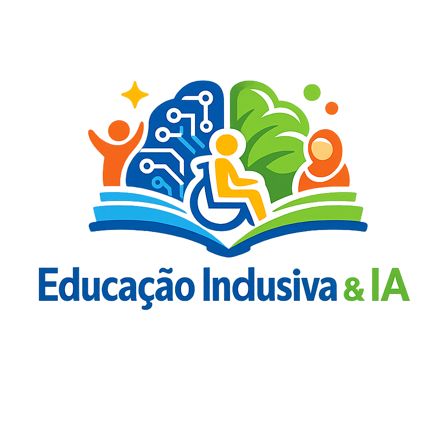

Barreiras escolares
Falta de acessibilidade, baixa adaptação, formação docente insuficiente, desigualdade tecnológica e currículos distantes da realidade.
Educação inclusiva com tecnologia responsável
Um guia visual baseado no Padlet "IA e Inclusão": barreiras, conceitos, aplicações, pesquisas, vídeos, podcast e caminhos práticos para usar inteligência artificial sem perder o foco em acesso, participação e aprendizagem.

Objetivo
A trilha organiza o tema em quatro movimentos: enxergar as barreiras, compreender o potencial da IA, conhecer exemplos concretos e planejar uma implementação responsável.
Painel interativo
Trilha
Um percurso em quatro etapas para sair do diagnóstico das barreiras e chegar a escolhas responsáveis de uso da IA na escola.
Falta de acessibilidade, baixa adaptação, formação docente insuficiente, desigualdade tecnológica e currículos distantes da realidade.
Habilidades sociais e interação, personalização da aprendizagem, ambientes virtuais adaptativos e chatbots com orientação em linguagem acessível.
CapacitaBOT, LEAF, apoio a estratégias docentes no TEA e ferramentas como Immersive Reader, Khanmigo, ROAR, Empower IEP, FeelLink e Maestra mostram usos possíveis quando há intenção inclusiva.
Projetar com pessoas impactadas, compensar participantes pelo conhecimento compartilhado, garantir acessibilidade desde o início e treinar educadores antes da adoção.
Glossário relâmpago
Aplicações
Checklist
Recursos
 Padlet trabalho PI - trilha complementar sobre Educação Inclusiva e IA
Padlet trabalho PI - trilha complementar sobre Educação Inclusiva e IA
 Objetivos da trilha - IA e Educação Inclusiva
Objetivos da trilha - IA e Educação Inclusiva
 Podcast - Inclusão ou exclusão algorítmica na escola
Spotify
Spotify - Inclusão ou exclusão? IA na educação inclusiva
Podcast - Inclusão ou exclusão algorítmica na escola
Spotify
Spotify - Inclusão ou exclusão? IA na educação inclusiva
 Introdução à Trilha IA-900
Introdução à Trilha IA-900
 O que é Inteligência Artificial?
O que é Inteligência Artificial?
 Princípios básicos do Aprendizado de Máquina
Princípios básicos do Aprendizado de Máquina
 Como o computador processa dados e mídias
Como o computador processa dados e mídias
 Caso de uso I - aprendendo um idioma
Caso de uso I - aprendendo um idioma
 Caso de uso II - criando uma receita culinária
Caso de uso II - criando uma receita culinária
 Cutscene Educação Inclusiva
Áudio
Podcast - IA na Educação Inclusiva
PDF
Paper de Stanford - AI + Learning Differences
PDF
PDF - IA e tecnologia inclusivas na educação K-12
Cutscene Educação Inclusiva
Áudio
Podcast - IA na Educação Inclusiva
PDF
Paper de Stanford - AI + Learning Differences
PDF
PDF - IA e tecnologia inclusivas na educação K-12
 Palestra sobre Desenho Universal para a Aprendizagem
Palestra sobre Desenho Universal para a Aprendizagem
 Padlet original: IA e Inclusão
Padlet original: IA e Inclusão